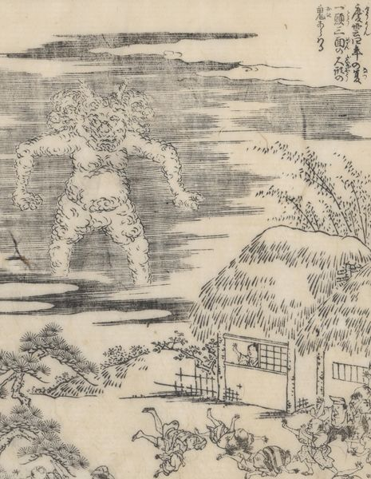

← 图鉴索引

一頭三面の大形の鬼。雲のような姿をしている。高さ八丈、横一丈二尺。
著作者：秋里翁・西村中和／出典：親書誌：U426_nichibunken_0446：本朝年代記圖會／日付：2017／資源識別子：U426_nichibunken_0446_0015_0000
Copyright (c)2010- International Research Center for Japanese Studies, Kyoto, Japan. All rights reserved.